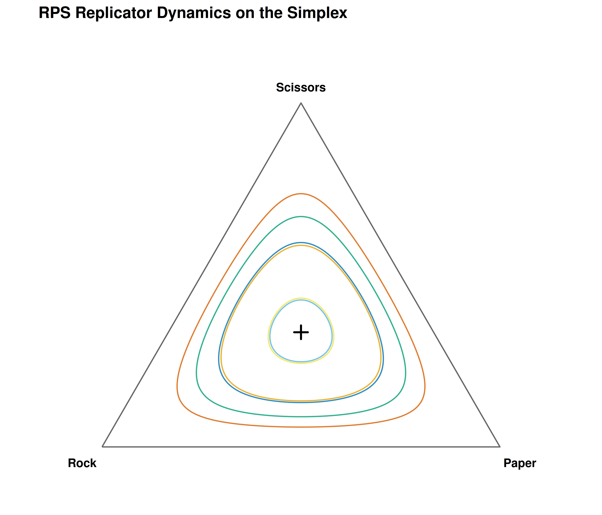
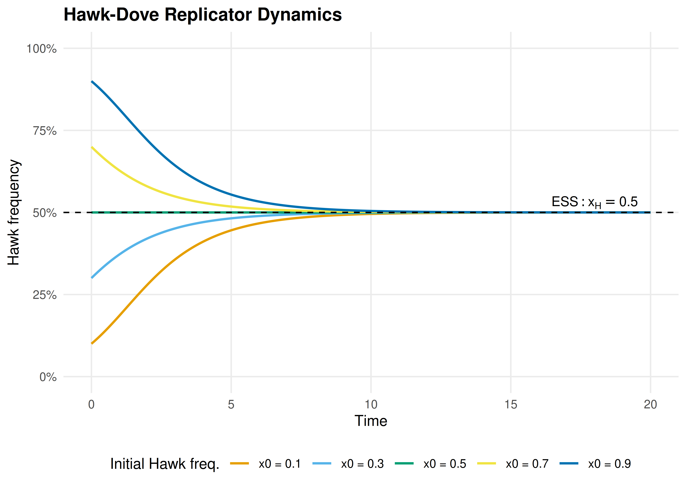

20 Replicator Dynamics
An introduction to the replicator equation — the central dynamical system of evolutionary game theory — with ODE solutions in R for Rock-Paper-Scissors and Hawk-Dove games, including simplex visualization.
Learning objectives
- State the replicator equation and explain the biological and game-theoretic intuition behind each term.
- Use
deSolveto numerically integrate the replicator equation for arbitrary payoff matrices. - Visualize replicator dynamics on the two-dimensional simplex for three-strategy games.
- Analyze convergence to equilibrium in Hawk-Dove and cycling behavior in Rock-Paper-Scissors.
20.1 Motivation
In 18 and 19, we studied discrete agents making discrete choices. But many evolutionary and economic processes are better described in continuous time: strategy frequencies shift gradually as more successful types reproduce faster. How do we model this?
The replicator equation, introduced by Taylor and Jonker (1978) and named by Schuster and Sigmund (1983), provides the answer. It is the fundamental dynamical system of evolutionary game theory, describing how the frequency of each strategy in a large population changes over time as a function of its fitness relative to the population average.
The replicator equation connects game theory to biology (it arises from natural selection), economics (it describes learning dynamics in large populations), and dynamical systems (it produces fixed points, limit cycles, and chaos). In this chapter, we solve it numerically in R for two classic games and visualize the resulting dynamics.
20.2 Theory
20.2.1 The replicator equation
Consider a large population where individuals play one of \(n\) strategies. Let \(x_i\) be the fraction of the population playing strategy \(i\), so \(\mathbf{x} = (x_1, \ldots, x_n)\) lies on the simplex \(\Delta^{n-1} = \{ \mathbf{x} \geq 0 : \sum_i x_i = 1 \}\).
The fitness of strategy \(i\) against the current population is: \[ f_i(\mathbf{x}) = \sum_j a_{ij} x_j = (A\mathbf{x})_i \] where \(A = (a_{ij})\) is the payoff matrix. The average fitness is: \[ \bar{f}(\mathbf{x}) = \sum_i x_i f_i(\mathbf{x}) = \mathbf{x}^\top A \mathbf{x} \]
The replicator equation is: \[\begin{equation} \dot{x}_i = x_i \bigl( f_i(\mathbf{x}) - \bar{f}(\mathbf{x}) \bigr), \quad i = 1, \ldots, n \tag{17.3} \end{equation}\]
The interpretation is elegant: a strategy grows when its fitness exceeds the population average, and shrinks when it falls below. The rate of change is proportional to both the current frequency \(x_i\) (rare strategies change slowly in absolute terms) and the fitness advantage \(f_i - \bar{f}\).
20.2.2 Key properties
- Simplex invariance: If \(\mathbf{x}(0) \in \Delta^{n-1}\), then \(\mathbf{x}(t) \in \Delta^{n-1}\) for all \(t \geq 0\). Frequencies always sum to one.
- Rest points: Every vertex of the simplex (a pure-strategy population) is a rest point. Interior rest points correspond to mixed Nash equilibria of the underlying game.
- Folk theorem: In two-strategy games, every ESS is an asymptotically stable rest point of the replicator dynamics, and every stable rest point is a Nash equilibrium.
20.2.3 Two example games
Rock-Paper-Scissors (RPS). The payoff matrix is:
\[ A_{\text{RPS}} = \begin{pmatrix} 0 & -1 & 1 \\ 1 & 0 & -1 \\ -1 & 1 & 0 \end{pmatrix} \]
The unique interior equilibrium \(\mathbf{x}^* = (1/3, 1/3, 1/3)\) is a center: trajectories cycle around it forever without converging. This is the classic example of non-convergent replicator dynamics.
Hawk-Dove. With benefit \(V = 2\) and cost \(C = 4\):
\[ A_{\text{HD}} = \begin{pmatrix} (V - C)/2 & V \\ 0 & V/2 \end{pmatrix} = \begin{pmatrix} -1 & 2 \\ 0 & 1 \end{pmatrix} \]
The interior equilibrium is at \(x_H^* = V/C = 0.5\). This is an ESS and the replicator dynamics converge to it from any interior initial condition.
20.3 Implementation in R
20.3.1 Solving with run_replicator()
The helper function run_replicator() (defined in R/replicator.R) wraps deSolve::ode() to integrate the replicator equation. It takes a payoff matrix, initial frequencies, and a time grid, returning a data frame of strategy frequencies over time.
20.3.2 Simplex coordinate transform
To plot three-strategy dynamics on a two-dimensional ternary diagram, we project from the simplex to Cartesian coordinates using the standard transform:
20.3.3 Running RPS dynamics from multiple initial conditions
set.seed(42)
n_traj <- 6
initial_conditions <- map(seq_len(n_traj), function(i) {
raw <- runif(3)
raw / sum(raw)
})
rps_trajectories <- map_dfr(seq_along(initial_conditions), function(k) {
x0 <- initial_conditions[[k]]
out <- run_replicator(A_rps, x0, times = seq(0, 40, by = 0.05))
coords <- simplex_to_cartesian(out[, 2], out[, 3], out[, 4])
coords$trajectory <- factor(k)
coords$time <- out$time
coords
})20.4 Worked example
We trace the replicator dynamics for specific initial conditions in both games.
20.4.1 Rock-Paper-Scissors
Starting from \(\mathbf{x}_0 = (0.6, 0.3, 0.1)\) — a population dominated by Rock:
x0_rps <- c(0.6, 0.3, 0.1)
out_rps <- run_replicator(A_rps, x0_rps, times = seq(0, 40, by = 0.1))
names(out_rps) <- c("time", "Rock", "Paper", "Scissors")
cat("RPS dynamics from x0 = (0.6, 0.3, 0.1):\n\n")#> RPS dynamics from x0 = (0.6, 0.3, 0.1):
cat(sprintf(" t = %2.0f: Rock = %.3f Paper = %.3f Scissors = %.3f\n",
0, x0_rps[1], x0_rps[2], x0_rps[3]))#> t = 0: Rock = 0.600 Paper = 0.300 Scissors = 0.100
for (t_val in c(5, 10, 20, 40)) {
row <- out_rps[out_rps$time == t_val, ]
cat(sprintf(" t = %2.0f: Rock = %.3f Paper = %.3f Scissors = %.3f\n",
t_val, row$Rock, row$Paper, row$Scissors))
}#> t = 5: Rock = 0.087 Paper = 0.488 Scissors = 0.426
#> t = 10: Rock = 0.551 Paper = 0.091 Scissors = 0.358
#> t = 20: Rock = 0.164 Paper = 0.163 Scissors = 0.673
#> t = 40: Rock = 0.298 Paper = 0.602 Scissors = 0.100The frequencies cycle endlessly around the interior equilibrium \((1/3, 1/3, 1/3)\). Rock starts high, attracting Paper players who can exploit it; Paper then rises, attracting Scissors; Scissors rises, attracting Rock — and the cycle repeats. The orbit never converges because the interior equilibrium is a center (neutrally stable), not an attractor.
triangle <- tibble(
sx = c(0, 1, 0.5, 0),
sy = c(0, 0, sqrt(3) / 2, 0)
)
center <- simplex_to_cartesian(1/3, 1/3, 1/3)
p_rps <- ggplot() +
geom_path(data = triangle, aes(x = sx, y = sy),
colour = "grey40", linewidth = 0.5) +
geom_path(data = rps_trajectories,
aes(x = sx, y = sy, colour = trajectory),
linewidth = 0.5, alpha = 0.8) +
geom_point(data = center, aes(x = sx, y = sy),
shape = 3, size = 3, stroke = 1.2, colour = okabe_ito[8]) +
annotate("text", x = -0.05, y = -0.04, label = "Rock",
size = 3.5, fontface = "bold") +
annotate("text", x = 1.05, y = -0.04, label = "Paper",
size = 3.5, fontface = "bold") +
annotate("text", x = 0.5, y = sqrt(3)/2 + 0.04, label = "Scissors",
size = 3.5, fontface = "bold") +
scale_colour_manual(values = okabe_ito[1:6]) +
coord_equal(xlim = c(-0.1, 1.1), ylim = c(-0.1, 1.0)) +
theme_publication() +
theme(axis.text = element_blank(),
axis.ticks = element_blank(),
panel.grid.major = element_blank(),
legend.position = "none") +
labs(title = "RPS Replicator Dynamics on the Simplex",
x = NULL, y = NULL)
p_rps
Figure 20.1: Replicator dynamics for Rock-Paper-Scissors on the two-dimensional simplex. Six trajectories from random initial conditions cycle around the interior equilibrium at (1/3, 1/3, 1/3). The orbits are closed curves — the system never converges, reflecting the non-transitive dominance structure of the game.
save_pub_fig(p_rps, "replicator-rps-simplex", width = 7, height = 6)20.4.2 Hawk-Dove
Starting from \(x_H = 0.1\) (a population with few Hawks):
x0_hd <- c(0.1, 0.9)
out_hd <- run_replicator(A_hd, x0_hd, times = seq(0, 20, by = 0.1))
names(out_hd) <- c("time", "Hawk", "Dove")
cat("Hawk-Dove dynamics from x0 = (0.1, 0.9):\n\n")#> Hawk-Dove dynamics from x0 = (0.1, 0.9):
for (t_val in c(0, 2, 5, 10, 20)) {
row <- out_hd[out_hd$time == t_val, ]
cat(sprintf(" t = %2.0f: Hawk = %.3f Dove = %.3f\n",
t_val, row$Hawk, row$Dove))
}#> t = 0: Hawk = 0.100 Dove = 0.900
#> t = 2: Hawk = 0.280 Dove = 0.720
#> t = 5: Hawk = 0.446 Dove = 0.554
#> t = 10: Hawk = 0.496 Dove = 0.504
#> t = 20: Hawk = 0.500 Dove = 0.500Hawks are rare but earn a high payoff by exploiting the predominantly Dove population. The Hawk frequency rises rapidly at first, then decelerates as more Hawk-Hawk encounters occur (which are costly). The system converges smoothly to the ESS at \(x_H^* = V/C = 0.5\).
p_hd <- ggplot(hd_trajectories, aes(x = time, y = Hawk, colour = initial)) +
geom_line(linewidth = 0.8) +
geom_hline(yintercept = 0.5, linetype = "dashed", colour = okabe_ito[8]) +
annotate("text", x = 18, y = 0.53, label = "ESS: x[H] == 0.5",
parse = TRUE, size = 3.5, colour = okabe_ito[8]) +
scale_colour_manual(values = okabe_ito[1:5], name = "Initial Hawk freq.") +
scale_y_continuous(limits = c(0, 1), labels = label_percent()) +
theme_publication() +
labs(title = "Hawk-Dove Replicator Dynamics",
x = "Time", y = "Hawk frequency")
p_hd
Figure 20.2: Hawk frequency over time for five different initial conditions. All trajectories converge to the ESS at \(x_H = 0.5\) (dashed line), regardless of starting point. Initial conditions below the ESS see Hawk increase; those above see it decrease.
save_pub_fig(p_hd, "replicator-hd-dynamics", width = 7, height = 5)The Hawk-Dove dynamics illustrate a core result in evolutionary game theory: the ESS is a global attractor of the replicator dynamics. No matter how the population starts (as long as both strategies are present), it converges to the mixed equilibrium where Hawks and Doves coexist. This is in stark contrast to RPS, where the dynamics cycle forever.
20.4.3 Comparing the two games
The difference between the two games reflects a deep structural distinction:
- Hawk-Dove has a symmetric \(2 \times 2\) payoff matrix with an interior ESS. The replicator dynamics have a Lyapunov function (a quantity that strictly decreases along trajectories), guaranteeing convergence.
- Rock-Paper-Scissors has a skew-symmetric payoff matrix. The quantity \(H(\mathbf{x}) = x_1 x_2 x_3\) is conserved along trajectories (it is a constant of motion), producing closed orbits rather than convergence.
This shows that the replicator equation’s behavior depends qualitatively on the game’s payoff structure — a theme we will revisit when studying evolutionarily stable strategies in 21.
20.5 Extensions
- Asymmetric replicator dynamics: When players occupy different roles (e.g., owner vs. intruder), the dynamics involve two coupled replicator equations, one for each population. This leads to higher-dimensional phase spaces.
- Mutation and selection: Adding a small mutation rate \(\mu\) transforms the replicator equation into the replicator-mutator equation: \(\dot{x}_i = \sum_j x_j f_j Q_{ji} - x_i \bar{f}\), where \(Q\) is a mutation matrix. This can turn centers into spirals.
- Discrete-time replicator: The discrete-time version \(x_i' = x_i f_i / \bar{f}\) has different stability properties and can exhibit chaos even in low dimensions.
- Connection to spatial models: The well-mixed replicator dynamics serve as a baseline for the spatial models of 19. When spatial structure matters, local frequency-dependent selection can sustain strategies that the replicator equation predicts will go extinct.
- For a comprehensive treatment, see Hofbauer & Sigmund (1998). For the connection between replicator dynamics and learning, see Fudenberg & Levine (1998).
Exercises
-
Three-strategy Hawk-Dove-Retaliator. Define a \(3 \times 3\) payoff matrix for a game with Hawks, Doves, and Retaliators (Retaliators play Dove against Doves and Hawk against Hawks). With \(V = 2\) and \(C = 4\), the matrix is:
\[A = \begin{pmatrix} -1 & 2 & -1 \\ 0 & 1 & 1 \\ -1 & 1 & 0.5 \end{pmatrix}\]
Use
run_replicator()to solve the dynamics from three different initial conditions. Plot the trajectories on the simplex. Does the system converge? If so, to what equilibrium? Sensitivity to initial conditions in RPS. Run the RPS dynamics from \(\mathbf{x}_0 = (0.5, 0.3, 0.2)\) and from \(\mathbf{x}_0 = (0.501, 0.3, 0.199)\). Plot both trajectories on the simplex. How different are the orbits? Relate your finding to the conservation of \(H(\mathbf{x}) = x_1 x_2 x_3\).
Payoff perturbation. Modify the RPS payoff matrix to be slightly asymmetric: change the (1,2) entry from \(-1\) to \(-1.1\). Run the dynamics and plot the trajectory. Does the system still cycle, or does it now converge to a vertex? Explain why breaking the skew-symmetry changes the qualitative dynamics.
Solutions appear in D.